Descubrí
TUS mejores
partidos
Encontrá los partidos que más te van a emocionar según tus preferencias.
Descubrí TUS mejores partidos
Respondé un quiz rápido o ajustá tus preferencias tácticas:
Estilo de Juego
Definí la propuesta táctica que preferís y encontrá tus partidos ideales.
Tiki-Taka
Juego de Posición y Dominio
Monopolio del balón, pases cortos, paciencia para desorganizar, uso de toda la cancha y presión asfixiante.
Ajustes de Recomendación
Calibrá la fricción del juego y el equilibrio entre táctica y espectáculo.
Grupos del Mundial (A a L)
Explora la distribución de las 48 selecciones clasificadas a la Copa del Mundo de Estados Unidos, México y Canadá 2026.
Selecciones y Valores de Mercado
Busca y examina los planteles probables extraídos de Wikipedia, enriquecidos con valores de mercado reales de la API de Transfermarkt y estadísticas de rendimiento.
| Jugador | Posición | Club Actual | Edad | PJ Int. | Goles Int. | Min. Recientes | Asist. Recientes | Propensión Tarjetas |
|---|
Registro de Jugadores No Resueltos
En cumplimiento con las políticas de precisión de datos, no estimamos ni inventamos valores de mercado o métricas avanzadas. Si un jugador no pudo resolverse en la API de Transfermarkt de manera certera, se guarda aquí con el motivo detallado de error, insertándose en su selección con valores nulos (NULL).
Armá tu Equipo Ideal
Elegí tu formación, drafteá jugadores y descubrí tu perfil táctico.